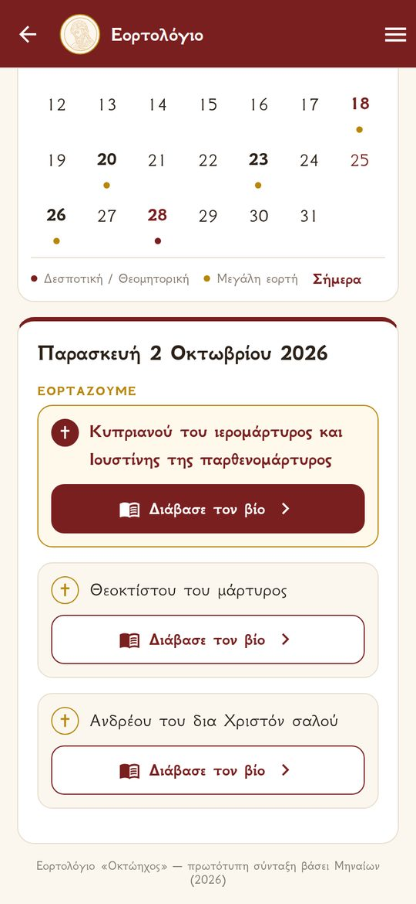
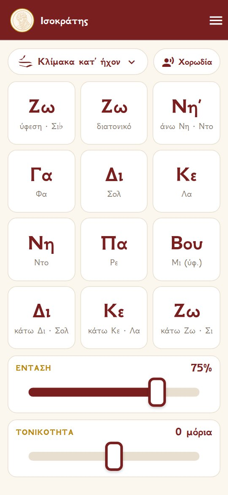
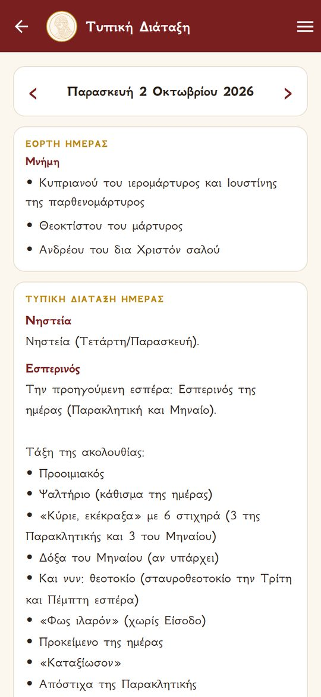
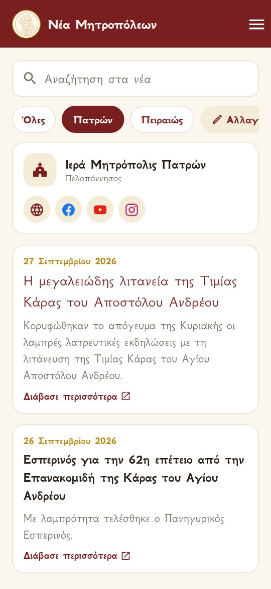
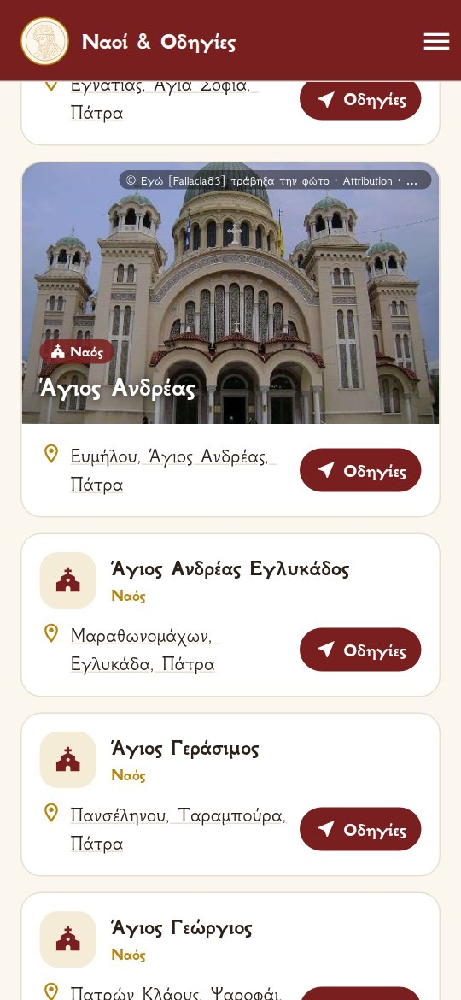

Οκτώηχος
Ο σύντροφος του ψάλτηThe chanter’s companion
Μια εφαρμογή για ψάλτες και για όσους αγαπούν την ψαλτική: εορτολόγιο με βίους αγίων και νηστείες, τυπική διάταξη κάθε ημέρας, ισοκράτης με τις κλίμακες κάθε ήχου, τα νέα όλων των Μητροπόλεων της Ελλάδος με χάρτη, και πάνω από 19.000 ναοί με πλοήγηση μέχρι την πόρτα. An app for chanters and everyone who loves Byzantine chant: a church calendar with lives of the saints and fasting days, the daily Typikon, an ison with the scale of every mode, news from every Metropolis of Greece with a map, and over 19,000 churches with directions to the door.
Τι περιέχειWhat’s inside
Όλα όσα χρειάζεται ο ψάλτης σε μία εφαρμογή: εορτολόγιο με βίους αγίων, τυπική διάταξη, ισοκράτης, τα νέα όλων των Μητροπόλεων και πάνω από 19.000 ναοί με χάρτη και πλοήγηση GPS — με απλό και καθαρό σχεδιασμό.Everything a chanter needs in one app: a church calendar with lives of the saints, the Typikon, an ison, news from every Metropolis and over 19,000 churches with a map and GPS directions — with a simple, clear design.
Οι άγιοι κάθε ημέρας και οι βίοι τουςThe saints of each day and their lives
- Ημερολόγιο με Δεσποτικές, Θεομητορικές και μεγάλες εορτές.
- Νηστεία κάθε ημέρας με διακριτικά χρώματα: αλάδωτο, νηστεία, κατάλυση οίνου, ελαίου ή ιχθύος.
- Κινητές εορτές (Τριώδιο, Πάσχα, Πεντηκοστάριο) σωστές για κάθε χρονιά.
- Πάνω από 1.100 μνήμες αγίων για όλο τον χρόνο, η καθεμία με τον σύντομο βίο της.
- Προαιρετική ειδοποίηση για τις ονομαστικές εορτές των επαφών σου — τα ονόματα δεν φεύγουν ποτέ από το κινητό.
- Calendar with the Feasts of the Lord, of the Theotokos and the major feasts.
- The fast of each day in discreet colours: no oil, fast, wine/oil or fish allowed.
- Movable feasts (Triodion, Pascha, Pentecostarion) correct for any year.
- Over 1,100 commemorations for the whole year, each with a short life of the saint (in Greek).
- Optional name-day reminders for your contacts — names never leave your phone.

Το ίσο, με τις κλίμακες κάθε ήχουThe ison, with the scale of every mode
- Βαθιές, ανθρώπινες ανδρικές φωνές με βαθυφώνους, σε συνεχή επανάληψη.
- Κλίμακα κατ’ ήχον: διατονικό, μαλακό και σκληρό χρωματικό, εναρμόνιο (72 μόρια).
- Τονικότητα σε μόρια (−20 έως +20) που αλλάζει ακαριαία, για να ταιριάζει με τη φωνή του ψάλτη.
- «Δικός μου ήχος»: βάλε όποιο αρχείο ήχου θέλεις και ο Ισοκράτης το μεταφέρει σε κάθε φθόγγο.
- Deep, human male voices with basses an octave below, looping seamlessly.
- Scale by mode: diatonic, soft and hard chromatic, enharmonic (72 moria).
- Pitch in moria (−20 to +20) that changes instantly, to match the chanter’s voice.
- “My own sound”: load any audio file and the Ison moves it to every note.

Η τάξη των ακολουθιών κάθε ημέραςThe order of each day’s services
- Νηστεία, Εσπερινός, Όρθρος, Θεία Λειτουργία και αναγνώσματα.
- Τι λέγεται και με ποια σειρά σε κάθε ακολουθία.
- Πλήρης διάταξη όλου του έτους, με αναζήτηση.
- Fasting, Vespers, Matins, the Divine Liturgy and the readings.
- What is sung, and in what order, at every service (in Greek).
- The full Typikon for the whole year, with search.

Τα νέα της Μητροπόλεώς σουNews from your Metropolis
- Όλες οι Μητροπόλεις της Ελλάδος, της Κρήτης και της Δωδεκανήσου — διάλεξε μία, πολλές ή όλες.
- Χάρτης όλης της Ελλάδος με κάθε Μητρόπολη στο δικό της χρώμα: διάλεξε πατώντας πάνω της, με αναζήτηση, ζουμ και τα ονόματα των Μητροπόλεων.
- Τα νέα έρχονται αυτόματα από τις ιστοσελίδες τους, με φωτογραφία και περίληψη.
- Αναζήτηση στα νέα με μια λέξη.
- Ιστοσελίδα και social media κάθε Μητροπόλεως (Facebook, YouTube, Instagram) σε μεγάλα, ευδιάκριτα κουμπιά.
- Every Metropolis of Greece, Crete and the Dodecanese — follow one, several or all.
- A map of all of Greece with each Metropolis in its own colour: pick by tapping on it, with search, zoom and the names of the Metropolises.
- News arrives automatically from their websites, with a photo and a summary (in Greek).
- Search the news by a word.
- Each Metropolis’s website and social media (Facebook, YouTube, Instagram) as large, clear buttons.

Βρες τον ναό και πήγαινε με GPSFind the church and get there by GPS
- Πάνω από 19.000 ναοί, μονές και παρεκκλήσια σε όλη την Ελλάδα — και το Άγιον Όρος — ομαδοποιημένοι ανά πόλη και χωριό.
- Πρώτα η έδρα της Μητροπόλεως, με τον μητροπολιτικό ναό στην κορυφή.
- Διάλεξε μία ή περισσότερες Μητροπόλεις από τον χάρτη ή τη λίστα· η επιλογή σου μένει για την επόμενη φορά.
- Φωτογραφίες των ναών, όπου υπάρχουν (από το Wikimedia Commons, με αναφορά του δημιουργού).
- Η διεύθυνση κάθε ναού· με ένα πάτημα ανοίγει ο χάρτης.
- Κουμπί «Οδηγίες»: η εφαρμογή χαρτών του κινητού σε οδηγεί με GPS μέχρι τον ναό.
- Ιστοσελίδα, Facebook, Instagram, YouTube και τηλέφωνο του ναού, όπου υπάρχουν.
- Αναζήτηση με όνομα ναού, οδό ή περιοχή — και σε όλη την Ελλάδα.
- Over 19,000 churches, monasteries and chapels across Greece — and Mount Athos — grouped by town and village.
- The see of the Metropolis first, with its cathedral at the top.
- Pick one or more Metropolises on the map or from the list; your choice is remembered for next time.
- Photos of the churches where available (from Wikimedia Commons, with credit to the author).
- The address of each church; one tap opens the map.
- “Directions” button: your phone’s maps app guides you by GPS to the church.
- The church’s website, Facebook, Instagram, YouTube and phone, where available.
- Search by church name, street or area — across all of Greece too.

Ελληνικά & EnglishGreek & English
Μενού και οδηγίες και στα αγγλικά.Menus and user guide also in English.
Οδηγίες με παραδείγματαGuide with examples
Μικρά κινούμενα παραδείγματα για κάθε λειτουργία.Small animated examples for every feature.
Γρήγορη & ομαλήFast & smooth
Έως 120 Hz σε κινητά που το υποστηρίζουν· οι χάρτες σχεδιάζονται απευθείας στην κάρτα γραφικών.Up to 120 Hz on phones that support it; the maps are drawn straight on the GPU.
Αυτόματες ενημερώσειςAutomatic updates
Νέο περιεχόμενο χωρίς να ξανακατεβάσεις την εφαρμογή.New content without reinstalling the app.
Όπως τη θέλειςYour way
Μέγεθος γραμμάτων και διακόπτες για να κρύψεις όποια ενότητα δεν χρειάζεσαι.Text size, and switches to hide any section you don’t need.
Σεβασμός στο απόρρητοPrivacy first
Χωρίς διαφημίσεις, χωρίς παρακολούθηση. Διαγραφή λογαριασμού από την ίδια την εφαρμογή.No ads, no tracking. Delete your account from within the app.
ΛήψηDownload
Διαθέσιμο για Android. Η έκδοση για iPhone θα ακολουθήσει.Available for Android. The iPhone version will follow.
Η πρόσβαση στην εφαρμογή γίνεται προς το παρόν με πρόσκληση. Για πρόσβαση, επικοινώνησε μαζί μας. Access is currently by invitation. Please contact us for access.